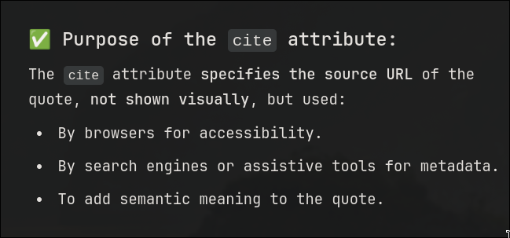

Table
table tag is used to create a table.thead tag is used for the header section of the tableth tag is used to create a header for the tabletbody tag is used to create the body for the tabletr tag is used to create a row in the tabletd corresponding to the cell this fills in the specified data in a cell that is td in that
particular row specified by trtfoot similar to thead- secondary use of these tags is to follow semantics in order to apply appropriate CSS for a corresponding relations
rowspan = n One particular row uses specified number of rows .
Essentially one row takes the space of specified number of rowscolspan = n Self-explainatory
caption can be used to give captions to the elements inside whom these are specified
List
There are three main types of list
ordered unordered and Defination
- Ordered List have bullets like numbers, roman numbers, alphabets
- Unordered list have bullets that do not follow any orders like : dots, star, arrow pointers
dl: is the defination list tag
dt: defination title
dd: defination defination/data
Use the type attribute to specifiy the type of bullets
example: type="i" , type="I", type="1"[default], type="a", type="A"
Entities
aka escape sequence
This will help us to show symbols like less than or greaters than using < for tags <
> for >
Other examples:
-
© for copyright symbol
for non-breaking-spaces blockquote is used for quotations This is a citations used with quote tag <q>
The cite tags implications might not be visible to the naked eye but :

- always use
code tag inside the pre tag inorder to maintain the spacing and lining of the code intact
-
charset is an attribute for the meta tag inorder to specify the encoding format / character set used in the document
-
canvas is used to print graphical images similar to svg but these images could mostly move
Next